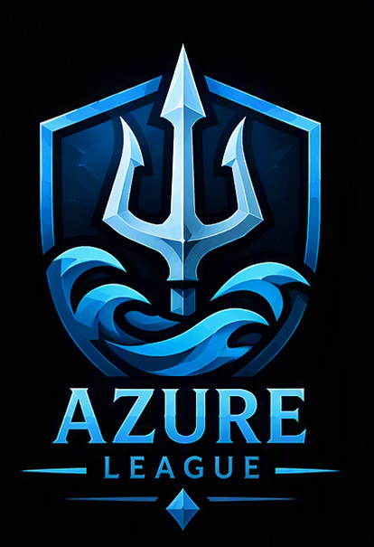

KINGDOMAzure League
Owner: None (Ready to be claimed)
Location: Flat beach & access to forrest provide an easy start. This kingdom is at reasonable distance to Ivory Kingdom.
Bonuses: farming, forresting, fishing & offense